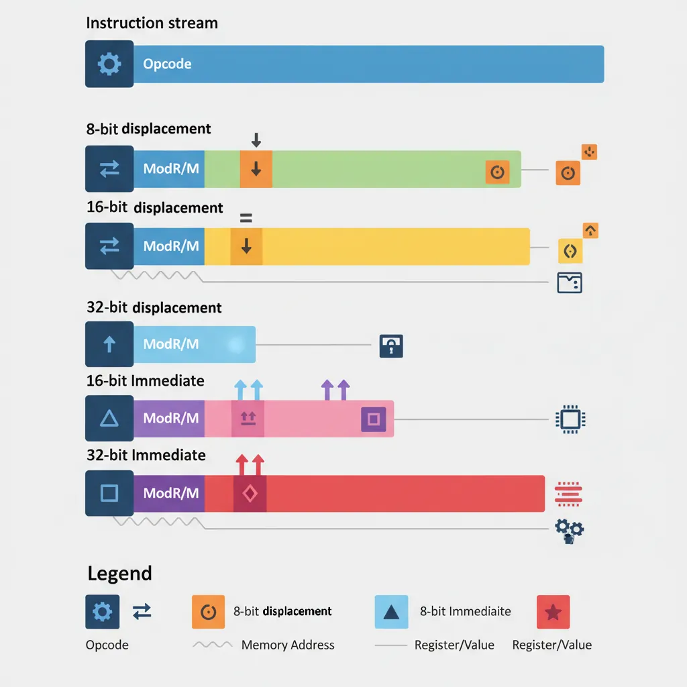
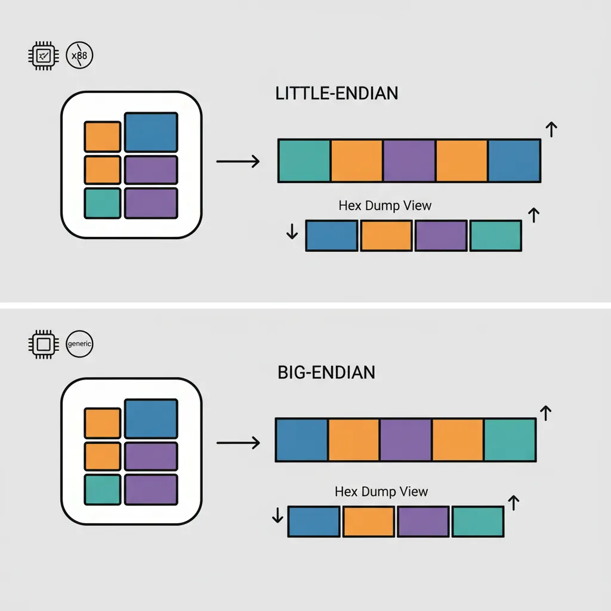
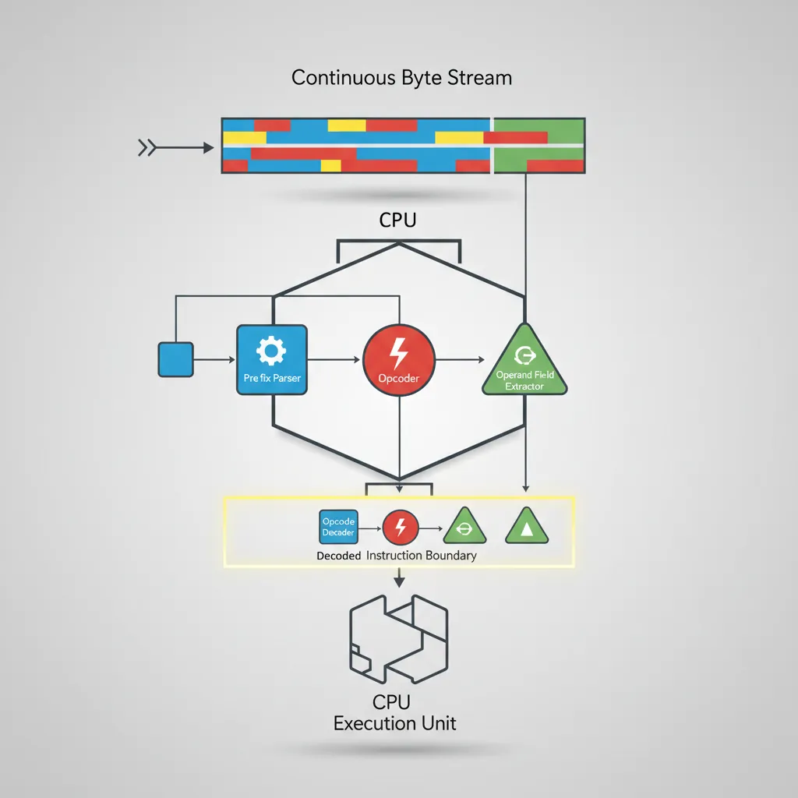

x86 Assembly Series Part 4: Instruction Encoding & Binary Layout
February 6, 2026Wasil Zafar30 min read
Dive deep into how x86 assembly instructions are encoded into machine code. Learn about opcodes, prefixes, ModRM byte, SIB byte, displacements, immediates, and how disassemblers decode variable-length instructions.
Key Concept: x86 instructions are variable-length (1-15 bytes). Understanding encoding is essential for writing shellcode, analyzing malware, and understanding compiler output.
Prefixes modify instruction behavior. They must appear before the opcode:
Legacy Prefix Groups
Group
Bytes
Purpose
Group 1 (Lock/Rep)
F0, F2, F3
LOCK, REPNE/REPNZ, REP/REPE/REPZ
Group 2 (Segment)
26, 2E, 36, 3E, 64, 65
ES, CS, SS, DS, FS, GS override
Group 3 (Operand Size)
66
Toggle 16/32-bit operand size
Group 4 (Address Size)
67
Toggle 32/64-bit address size
Operand-Size Override (66h)
; In 64-bit mode, default operand size is 32-bit
mov eax, [rbx] ; B8 XX XX XX XX (32-bit)
mov ax, [rbx] ; 66 8B 03 (66h makes it 16-bit)
mov rax, [rbx] ; 48 8B 03 (REX.W makes it 64-bit)
Rep Prefixes for String Operations
; F3 = REP prefix
rep movsb ; F3 A4 - Copy RCX bytes from [RSI] to [RDI]
rep stosq ; F3 48 AB - Fill RCX quadwords at [RDI] with RAX
; F2 = REPNE prefix
repne scasb ; F2 AE - Scan for AL in [RDI], stop when found
ModRM and SIB byte encoding — bit field breakdown showing how Mod, Reg, R/M, Scale, Index, and Base fields encode operand addressing modes
SIB Structure (8 bits):
| Scale (2 bits) | Index (3 bits) | Base (3 bits) |
| 7-6 | 5-3 | 2-0 |
Scale values:
00 = ×1 (no scaling)
01 = ×2
10 = ×4
11 = ×8
Special cases:
Index = 100 (RSP): No index register used
Base = 101 with Mod=00: No base, displacement only (RIP-relative)
SIB Examples
; Array access: arr[i*4]
mov eax, [rbx + rcx*4] ; SIB = 10_001_011 = 0x8B
; Scale=10(×4), Index=001(RCX), Base=011(RBX)
; 2D array: arr[row][col] where sizeof(row) = 8
mov eax, [rdi + rsi*8 + 16] ; Base=RDI, Index=RSI, Scale=8, Disp=16
; No base, just scaled index + displacement
mov eax, [rcx*4 + table] ; ModRM Mod=00, R/M=100 triggers SIB
; SIB Base=101 means no base, use disp32
Why SIB Matters: Array indexing (arr[i]) compiles to scaled addressing. Understanding SIB helps you read disassembly and optimize memory access patterns for cache efficiency.
Displacement & Immediate
These fields encode constant values embedded in the instruction.

Displacement and immediate fields — how constant offsets (8/16/32-bit) and literal values are encoded within x86 instruction bytes
Displacement (Memory Offset)
Displacement size depends on ModRM Mod field:
Mod = 00: No displacement (except special cases)
Mod = 01: 8-bit signed displacement (sign-extended)
Mod = 10: 32-bit displacement (or 16-bit in 16-bit mode)
Mod = 11: No memory access (register-to-register)
; No displacement
mov eax, [rbx] ; ModRM = 03 (Mod=00)
; 8-bit displacement (efficient for small offsets)
mov eax, [rbx + 8] ; ModRM = 43 (Mod=01), Disp8 = 08
; 32-bit displacement (required for large offsets)
mov eax, [rbx + 0x1000] ; ModRM = 83 (Mod=10), Disp32 = 00 10 00 00
; The assembler picks the smallest encoding automatically
64-bit Immediate Limitation: Only MOV reg64, imm64 supports full 64-bit immediates. Other instructions use 32-bit sign-extended immediates. This is why mov rax, big_constant; add rbx, rax is sometimes needed.
Little-Endian Representation
x86 stores multi-byte values with the least significant byte first. This affects how you read hex dumps.

Little-endian vs big-endian byte ordering — x86 stores the least significant byte at the lowest address, affecting how multi-byte values appear in hex dumps
; Instruction: mov eax, 0xDEADBEEF
; Encoding: B8 EF BE AD DE
; ^^ opcode
; ^^ ^^ ^^ ^^ immediate in little-endian!
; When you see this in a hex dump:
; 48 C7 C0 2A 00 00 00
; It's: mov rax, 0x0000002A (42 decimal)
; NOT: mov rax, 0x2A000000
Network Programming: Network protocols use big-endian ("network byte order"). Use bswap instruction or htons()/ntohs() functions when sending/receiving multi-byte values over the network.
REX Prefixes (x86-64)
REX prefixes enable 64-bit operands and access to registers R8-R15.
REX Byte Structure
REX prefix: 0100 WRXB (0x40-0x4F)
Bit 3 (W): 64-bit operand size (instead of default 32-bit)
Bit 2 (R): Extends ModRM.reg to 4 bits (access R8-R15)
Bit 1 (X): Extends SIB.index to 4 bits
Bit 0 (B): Extends ModRM.r/m or SIB.base to 4 bits
REX prefix values:
40 = REX (enables new 8-bit registers like SIL)
48 = REX.W (64-bit operand)
41 = REX.B (extended R/M)
44 = REX.R (extended Reg)
4D = REX.WRB (64-bit + extended Reg + extended R/M)
REX Examples
; Without REX
mov eax, ebx ; 89 D8 (32-bit, uses low 8 registers)
; REX.W for 64-bit operand
mov rax, rbx ; 48 89 D8 (64-bit)
; REX.R to access R8-R15 in Reg field
mov r8d, eax ; 44 89 C0 (R8D, 32-bit)
mov r8, rax ; 4C 89 C0 (R8, 64-bit, REX.WR)
; REX.B to access R8-R15 in R/M field
mov eax, r8d ; 41 89 C0
mov rax, r8 ; 49 89 C0 (REX.WB)
; REX.X for SIB index extension
mov eax, [rbx + r8*4] ; 42 8B 04 83 (REX.X)
REX and 8-bit Registers
; REX presence changes 8-bit register encoding!
; Without REX: AH, CH, DH, BH accessible (codes 4-7)
; With REX: SPL, BPL, SIL, DIL accessible (codes 4-7)
mov ah, 5 ; 80 C4 05 (no REX, AH = code 4)
mov spl, 5 ; 40 80 C4 05 (REX enables SPL = code 4)
mov r8b, 5 ; 41 B0 05 (REX.B for R8B)
Incompatibility: You cannot use AH, BH, CH, DH in the same instruction with R8-R15 or the new low-byte registers (SIL, DIL, BPL, SPL). REX presence blocks the high-byte encodings.
Variable-Length Decoding
x86's variable-length instructions (1-15 bytes) create unique challenges for both CPUs and disassemblers.

Variable-length instruction decoding — how the CPU decoder parses prefixes, opcodes, and operand fields from a continuous byte stream to determine instruction boundaries
CPU Decoding Process
Modern x86 Decoder Pipeline:
1. Fetch: Load 16-32 bytes from instruction stream
(aligned fetch, branch prediction critical)
2. Pre-decode: Find instruction boundaries
- Scan for prefixes (0x40-0x4F = REX, 0x66, 0xF2, etc.)
- Identify opcode (1, 2, or 3 bytes: 0F, 0F38, 0F3A)
- Determine if ModRM/SIB/Disp/Imm follow
3. Decode: Convert to micro-ops
- Simple: 1 µop (mov, add register)
- Complex: Multiple µops via microcode ROM
4. Queue: Place µops in execution queue
Instruction Length Determination
Length Calculation Algorithm:
length = 0
// Count prefixes (Groups 1-4)
while (byte is legacy prefix or REX):
length++
advance
// Opcode (1-3 bytes)
if byte == 0x0F:
length++
if next == 0x38 or 0x3A:
length++ // 3-byte opcode
length++ // 2-byte opcode
else:
length++ // 1-byte opcode
// ModRM present? (depends on opcode)
if opcode_needs_modrm:
parse_modrm()
length++
if modrm.rm == 100b: // SIB follows
length++
length += displacement_size(modrm.mod)
// Immediate? (depends on opcode)
length += immediate_size(opcode)
Decoding Challenges
Challenge
Problem
Solution
Variable length
Can't know length until parsing
Speculative pre-decode, large fetch
Prefix stacking
Up to 4 mandatory + REX + VEX
Prefix decoder state machine
Opcode ambiguity
Same byte means different things
Context-dependent decode tables
Branch targets
May land mid-instruction
Can't cache decoded instructions (code morphing)
Self-Modifying Code: x86 allows code modification, but the CPU's decoded instruction cache must be invalidated. The CPUID instruction is often used as a serializing fence after code modification.
How Disassemblers Work
Disassemblers face the inverse problem: given machine code bytes, recover the original assembly.
Linear Sweep Disassembly
Algorithm:
1. Start at entry point
2. Decode instruction, advance by its length
3. Repeat until end of section
Pros: Simple, fast
Cons: Fooled by:
- Data embedded in code
- Jump tables
- Anti-disassembly tricks
# objdump uses linear sweep
objdump -d ./binary
# Problem: if code jumps over data, linear sweep reads data as code
# 00001000: jmp 0x1008
# 00001002: db "HELLO" ← Linear sweep tries to decode as instructions!
# 00001008: mov eax, 1 ← Real code continues
Recursive Descent Disassembly
Algorithm:
1. Start at entry point, add to work list
2. While work list not empty:
a. Pop address
b. Decode instruction
c. If unconditional jump: add target to work list
d. If conditional jump: add both paths
e. If call: add target AND next instruction
f. If ret: stop this path
Pros: Follows actual control flow, skips embedded data
Cons:
- Indirect jumps (jmp rax) can't be resolved statically
- May miss dead code
- Doesn't handle computed jump tables easily
Anti-Disassembly Techniques
; Opaque predicate: always true, but disassembler doesn't know
mov eax, 1
test eax, eax
jz fake_branch ; Never taken, but disassembler follows it
; Real code here
fake_branch:
db 0xE8 ; Looks like CALL, corrupts next instruction decode
; Jump into middle of instruction
mov eax, 0x90909090 ; B8 90 90 90 90
jmp $-3 ; Jump to third 90 = NOP, skipping B8
Disassembler Tools
Tool
Method
Best For
objdump
Linear sweep
Quick inspection, well-formed binaries
ndisasm
Linear sweep
Raw binary blobs, boot sectors
IDA Pro / Ghidra
Recursive + heuristics
Malware, obfuscated code, full RE
Capstone library
On-demand
Building custom tools, dynamic analysis
Exercise: Compare Disassemblers
# Create a binary with embedded data
echo -ne '\xEB\x05HELLO\xB8\x01\x00\x00\x00\xC3' > test.bin
# Linear sweep (ndisasm)
ndisasm -b 64 test.bin
# 00000000 EB05 jmp short 0x7
# 00000002 48 dec eax ← 'H' decoded as instruction!
# ...
# The jmp should skip "HELLO" but linear sweep decodes it
Continue the Series
Part 3: Registers – Complete Deep Dive
Master all x86/x64 registers including GP, segment, control, and debug registers.